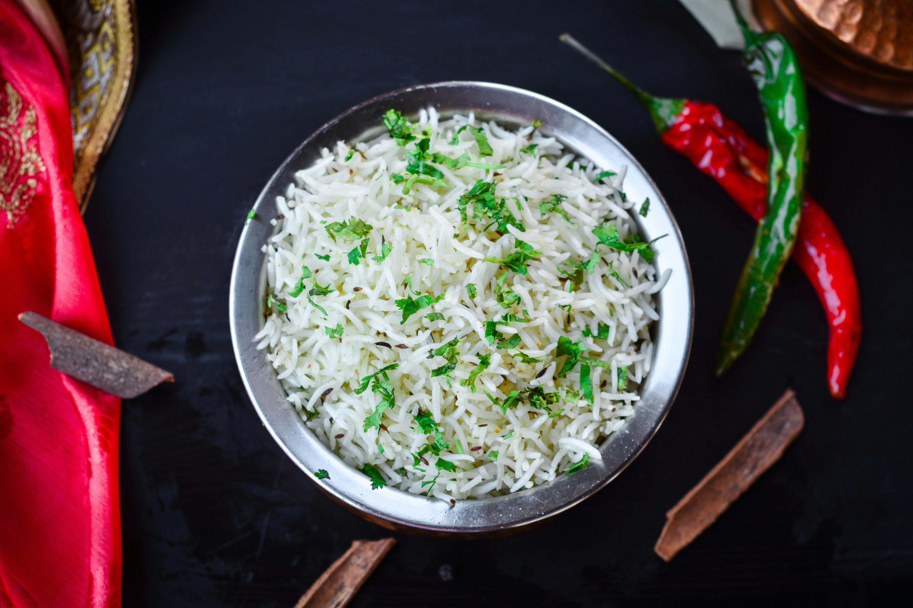

Home
Jeera Rice

Description
A fragrant and mildly spiced rice dish flavored with cumin seeds. A great side dish for dals and curries.
Ingredients
- 1 cup basmati rice
- 1¾ cups water
- 1 tbsp ghee or oil
- 1 tsp cumin seeds
- 1 bay leaf (optional)
- Salt to taste
Steps
- Rinse basmati rice 2–3 times and soak for 15–20 minutes. Drain.
- Heat ghee/oil in a pot or pressure cooker.
- Add cumin seeds (and bay leaf if using), let them splutter.
- Add soaked and drained rice, sauté gently for 1–2 mins.
- Add water and salt.
- Bring to a boil, then reduce heat to low. Cover and cook 10–12 mins (or pressure cook for 1 whistle).
- Let it rest 5 mins before fluffing with a fork.
- Serve hot with curries or dal.